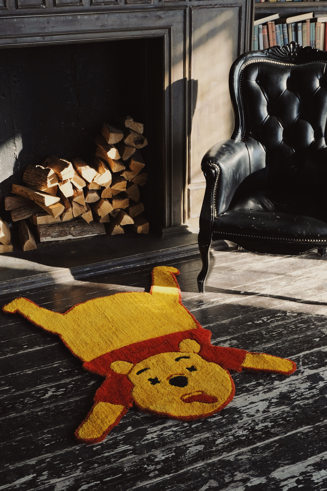

Disney long ago stopped making cartoons to tell children about the value of love and friendship. now Disney is using “children’s content” to raise new generations of future consumers of its goods and services. Winnie the Pooh went from being a friendly bear to a multi-million dollar franchise.

on February 28, 2023, Disney withdrew from Russia and took all content with it. this decision not only marks the end of Disney’s presence in Russia but also signifies an end to the idea of profiting off childhood and childhood memories.

ingredietns: 100% high quality acrylic, 100% true love

fairy tale
once upon a time, in a faraway land beyond the Hundred Acre Wood, there was a magical rug crafted from the softest fabric one could imagine. even the most cynical zoomers marveled at its cuddly and imaginative design.
it was whispered that the rug had been made from the hide of the world’s most expensive bear. dubbed “Winnie-the-Rug”, it embedded the power of love and friendship to make even the toughest days feel a little softer and warmer.